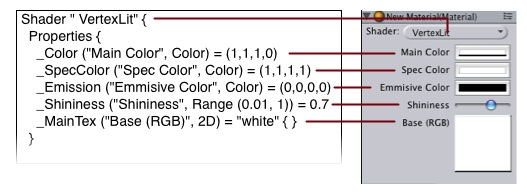
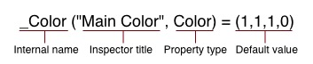

This tutorial will teach you how you can create your own shaders and make you game look a lot better
Unity is equipped with a powerful shading language, called ShaderLab. The syntax for this is reminiscent to cgFX and Microsoft's .fx languages, but not identical.
The shaders in Unity can use both OpenGLs fixed function pipeline, fragment and vertex programs or a combination of both.
In this tutorial we describe how to write shaders in shaderlab using both fixed function and fragment/vertex programs, therefore we rely on the shader programmer to have an basic understanding of OpenGLs render states and how to create fragment/vertex programs (using Cg from Nvidia corp.).
Information about render states in OpenGL can be found here: http://fly.cc.fer.hr/~unreal/theredbook/ and tutorials on how to create fragment and vertex programs can be found here: http://www.shadertech.com/articles/.
Getting started
To create a new shader, Either coose Assets->Create->Shader from the main menu, or duplicate an existing shader, and work from that. The new shader can be edited by choosing Edit Shader in the inspector.
Shader "simple" {
Properties {
_Color ("Main Color", Color) = (1,.5,.5,1)
}
SubShader {
Pass {
Material {
Diffuse [_Color]
}
Lighting On
}
}
}
This simple shader demonstrates one of the most basic shaders possible. It defines a color property called "main Color" and assigns it a default value of (Red: 1, Green: 0.5, blue: 0.5, alpha: 1). It then renders the object by invoking a Pass and in that pass setting the diffuse material component to the property color.
In the following tutorial we will descripe all the things you need to be able to create your own shaders.
Basic Vertex Lighting
if you open an existing shader, it can be a bit hard to get a good overview. To get you started, we will dissect the built-in VertexLit shader that ships with Unity. This shader uses OpenGL's fixed function pipeline to do per-vertex lighting.
Shader " VertexLit" {
Properties {
_Color ("Main Color", Color) = (1,1,1,0)
_SpecColor ("Spec Color", Color) = (1,1,1,1)
_Emission ("Emmisive Color", Color) = (0,0,0,0)
_Shininess ("Shininess", Range (0.01, 1)) = 0.7
_MainTex ("Base (RGB)", 2D) = "white" { }
}
SubShader {
Pass {
Material {
Diffuse [_Color]
Ambient [_Color]
Shininess [_Shininess]
Specular [_SpecColor]
Emission [_Emission]
}
Lighting On
SeperateSpecular On
SetTexture [_MainTex] {
constantColor [_Color]
Combine texture * primary DOUBLE, texture * constant
}
}
}
}
All shaders start with the keyword Shader followed by a string that represents the name of the shader. This is the name that is shown in the inspector. All code for this shader must be put within the braces after it {} (called a block).
- The name should be short and descriptive. It does not have to match the .shader file name.
- To put shaders in submenus in Unity, use slashes - E.g. "MyShaders/test" would be shown as "Test" in a submenu called "MyShaders"
Properties
At the beginning of the shader block you can define any properties that artists can edit. In the VertexLit example the properties looks like this:
|  |
The properties are listed on separate lines within the Properties block. Each property starts with the internal name (_Color, _MainTex). After this comes some more info (in parenthises); the name that is shown in the material inspector, and the type of edit control used. After this, the default value is listed.
|  |
The list of possible types are in the cheat sheet, along with a hirachial sheet of the way the command structure is built. It is also possible to set a default value for a property. This is done by using the equals sign, and then the default value. In the example of the color, a default value should be a four component vector, which is written (1, 1, 1, 1) for an vector of ones.
We now have our properties defined, and are ready to start writing the actual shader.
The Shader Body
Before we move on, let's define the basic structure of a shader file.
Different graphic cards have different capabilities. To allow you to make full use of whatever hardware your user has, a shader can contain multiple subshaders. When Unity renders a shader, it will go over the subshaders and simply use the first one that the hardware supports.
Shader "Test" {
// Properties here
SubShader {
// Subshader that requires fragment programs
}
SubShader {
// Subshader that only requires vertex programs
}
SubShader {
// SubShader that can run on anything.
}
}
This system allows Unity to support all existing hardware and maximize the quality of each one. It does, however, result in some long shaders.
Inside the each subshader block you set the render mode for this subshader. A complete list of available commands and the hierarchy can be found in the cheat sheet.
Passes
Each subshader is a collection of passes. For each pass, the object geometry is rendered, so there must be at least one pass. The pass for our VertexLit shader looks like this:
Pass {
Material {
Diffuse [_Color]
Ambient [_Color]
Shininess [_Shininess]
Specular [_SpecColor]
Emission [_Emission]
}
Lighting On
SeperateSpecular On
SetTexture [_MainTex] {
constantColor [_Color]
Combine texture * primary DOUBLE, texture * constant
}
}
Any commands defined in a pass configures the graphics hardware to render the geometry in a specific way.
In the example above we have a Material block. This binds our property variables to the different parts of the OpenGL hardware. The command Lighting On turns on the standard OpenGl lighting, and SeperateSpecular On enables the use for a separate color for the specular highlight.
All of these setups map very directly on to the OpenGL hardware API. To read more about this, consult the Red Book.
The next couple of commands are very important. They define the texture we want to use, and how to apply it in our rendering. The SetTexture command is followed by the property name of the texture we would like to use. This is followed by a block that defines how the texture is applied.
Within this block we set a constant color value, namely the color of the material, _Color.
In the next call we specify how to mix the texture with the color values. We do this with the Combine command that specifies how to blend the texture with another, or with a color. Here texture is the image of the texture specified immediately above (SetTexture). Primary is the vertex color, calculated from the Material values set above. We then have a comma, which specify that we are now working on the alpha channel, so texture here means the alpha value of the texture and constant is the constant value we just described. Another important variable is called previous. This is the result of any previous Combine step, and can be used to apply the result from a previous step to combine several textures and/or colors with each other. The object will now be rendered with the information specified in the Pass scope.
It is not necessary to start the rendering with a command or alike, it will begin automatically at the end of the pass block.
We can put more passes into the shader - they would get rendered afterwards. For now, though, that is not nessesary as we have the desired effect. Also, we only need one subshader, as we make no use of advanced features - this particular shader will work on any card that Unity supports.
The VertexLit shader is the most basic shader that we can think of. We did not use any hardware specific operations, nor did we utilize any of the more special and cool commands that the build in shading language has to offer.
In the next chapter, we do something about that by discussing those additional and important concepts.